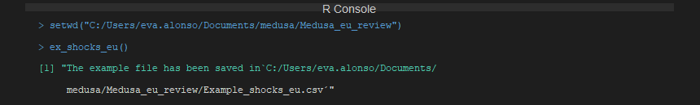
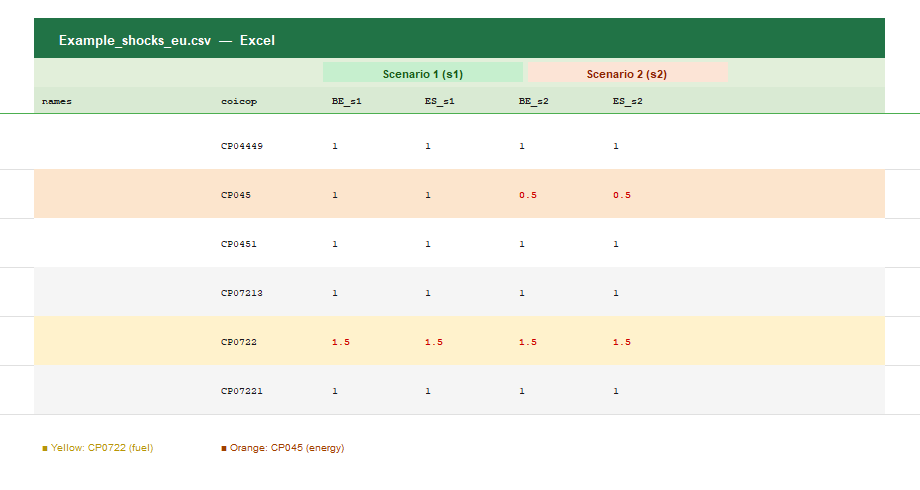
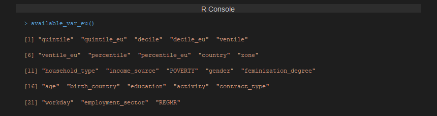
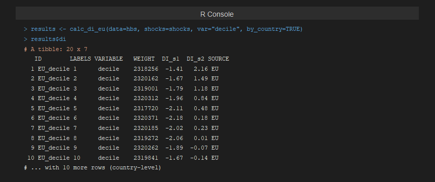
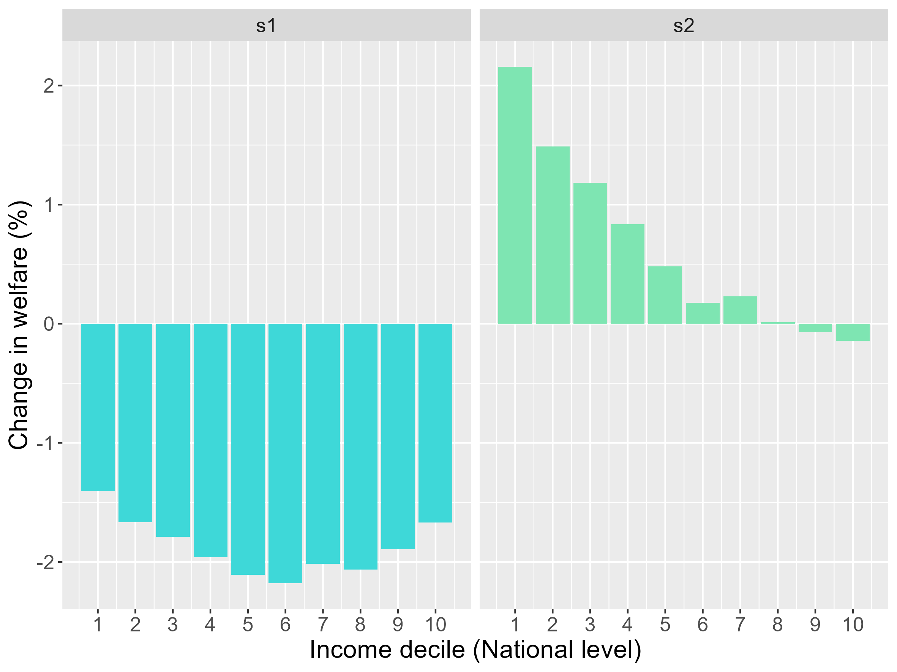
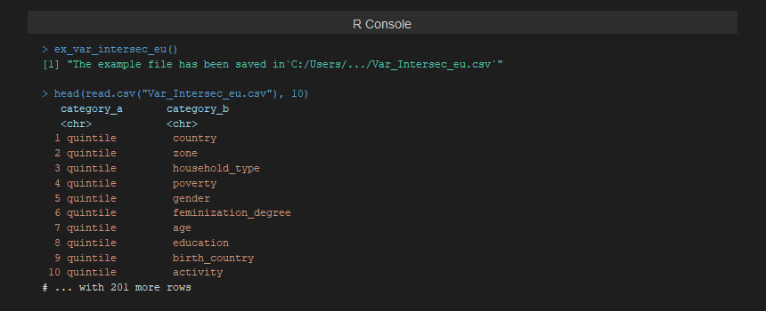
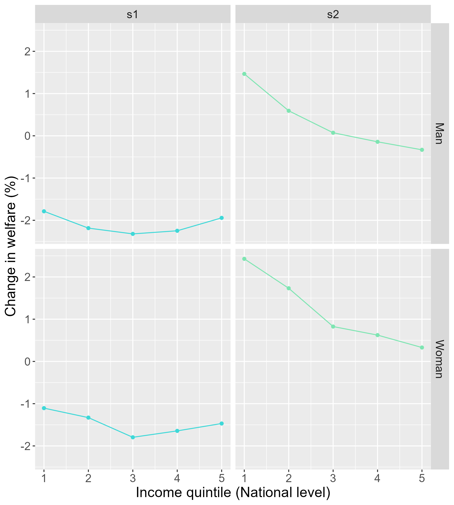

Step-by-step example
Introduction
In this example, we analyse the distributional impacts of energy price shocks in Belgium (BE) and Spain (ES) using the 2015 HBS wave, and compute energy and transport poverty indices for these two countries.
We consider two scenarios:
- Scenario 1: A price shock affecting fuel prices for private transportation (+50%), representing the type of shock observed during the 2022 energy crisis.
- Scenario 2: The same fuel price increase combined with a government policy that reduces domestic energy prices by 50%.
Step 0: Prepare the data
Process the 2015 HBS microdata for Belgium and Spain using
hbs_eu(). The raw files must be organised in the required
folder structure (see Preparing
the data).
hbs_eu() returns a data frame with one row per
household. Expenditure variables follow the COICOP naming convention and
all socioeconomic variables are already included.
Step 1: Calculate distributional impacts by income level
Define the scenarios
- Download the example shocks file:
This saves “Example_shocks_eu.csv” in your working
directory. The file already contains two scenarios: columns named
CC_s1 (Scenario 1) and CC_s2 (Scenario 2),
where CC is the two-letter country code.

Figure 1. ex_shocks_eu() saves the two-scenario
template CSV to the working directory.
- Open “Example_shocks_eu.csv” from your working
directory. The file contains one row per COICOP category and one column
per country-scenario combination. All shock values are initialised to
1(no change).
Figure 2. The template as it comes out of
ex_shocks_eu(). All values are 1. Highlighted
rows: CP045 (electricity, gas and other fuels) and CP0722 (fuels for
personal transport).
- Enter the price shocks for each COICOP category and scenario. In
this example:
-
1.5in “Use of personal vehicles” (CP0722) for all_s1and_s2columns (+50% fuel price increase in both scenarios). -
0.5in “Electricity, gas and other fuels” (CP045) for all_s2columns only (−50% domestic energy policy in Scenario 2). - Keep
1in all other categories.
-

Figure 3. The edited shocks file. Red values highlight the cells
that have been modified: CP0722 set to 1.5 in both
scenarios, and CP045 set to 0.5 in Scenario 2
only.
- Save the edited file and load it into R:
shocks <- read.csv("Example_shocks_eu.csv",
header = TRUE,
sep = ",",
dec = ".")Run the distributional impact calculation
- Check the variables available for distributional analysis:

Figure 4. Variables available for distributional analysis with
calc_di_eu().
- Calculate distributional impacts by income decile (at national level):
results <- calc_di_eu(data = hbs,
shocks = shocks,
var = "decile", # National income deciles
by_country = TRUE) # Results also per countryBy default, results and figures are saved in the
outputs/ folder of your working directory.

Figure 5. R output of calc_di_eu(). The
di element of the results list contains the distributional
impact (DI_s1, DI_s2) per income decile, for
the EU aggregate and each country.
Results interpretation
The figures generated by calc_di_eu show the relative
impact (%) on total equivalent consumption expenditure across income
deciles. A negative change indicates a welfare loss
(households bear higher costs), while a positive change
indicates a cost reduction.
- In Scenario 1, all deciles experience a welfare loss due to higher fuel prices, with middle- and higher-income households typically more affected as they rely more on private transport.
- In Scenario 2, the domestic energy price reduction partially offsets the fuel price increase. The benefit is progressive, concentrating among lower-income households that allocate a larger share of their budget to energy.
The figure generated by calc_di_eu illustrates the
relative impact (%) on total equivalent consumption expenditure across
income deciles:

Figure 6. Distributional impact by income decile for Scenario 1 and Scenario 2 (EU level). Negative values indicate a welfare loss; positive values indicate a cost reduction.
Step 2: Intersectional distributional impacts (income & gender)
- Download the intersectional variables file:
This saves “Var_Intersec_eu.csv” in your working directory with all 211 available variable pairs.

Figure 7. ex_var_intersec_eu() saves 211
intersectional variable pairs to the working directory. Only the pairs
whose variables are present in the data will be computed.
- Open “Var_Intersec_eu.csv” and keep only the row
for the combination
quintile–gender. Save and reload:
example_vars <- read.csv("Var_Intersec_eu.csv",
header = TRUE,
sep = ",",
dec = ".")- Run the intersectional calculation:
results_intersec <- calc_di_eu(data = hbs,
shocks = shocks,
var = NULL, # Skip individual variables
var_intersec = example_vars, # Quintile × Gender
by_country = TRUE)Results interpretation
The intersectional figures show the relative impact across income quintiles, disaggregated by the gender of the household reference person.

Figure 8. Distributional impacts across income quintiles disaggregated by gender (EU level). The two scenarios are shown side by side for each quintile-gender group.
Step 3: Energy poverty indices
- Calculate all energy poverty indices for Belgium and Spain:
ep <- calc_ep_eu(data = hbs,
index = "all")
print(ep)The result is a data frame with five rows (one per index:
10%, 2M, LIHC, HEP,
HEP_LI) and one column per country (BE,
ES). Values represent the proportion of households
classified as energy poor in each country.
- Save to Excel:
library(openxlsx)
write.xlsx(ep, "EP_BE_ES_2015.xlsx", sheetName = "Energy poverty")Step 4: Transport poverty indices
- Calculate all transport poverty indices:
tp <- calc_tp_eu(data = hbs,
index = "all")
print(tp)The result follows the same structure: four rows (one per index:
10%, 2M, LIHC, VTU)
and one column per country.
- Save to Excel:
write.xlsx(tp, "TP_BE_ES_2015.xlsx", sheetName = "Transport poverty")Full script
library(medusa)
# 0. Prepare data
hbs <- hbs_eu(year = 2015,
country = c("BE", "ES"),
path = "raw_data")
# 1. Price shocks
ex_shocks_eu()
# [edit Example_shocks_eu.csv ...]
shocks <- read.csv("Example_shocks_eu.csv", header = TRUE, sep = ",", dec = ".")
# 2. Distributional impacts by income decile
results <- calc_di_eu(data = hbs,
shocks = shocks,
var = "decile",
by_country = TRUE)
# 3. Intersectional impacts (quintile × gender)
ex_var_intersec_eu()
# [edit Var_Intersec_eu.csv ...]
example_vars <- read.csv("Var_Intersec_eu.csv", header = TRUE, sep = ",", dec = ".")
results_intersec <- calc_di_eu(data = hbs,
shocks = shocks,
var = NULL,
var_intersec = example_vars,
by_country = TRUE)
# 4. Energy poverty indices
library(openxlsx)
ep <- calc_ep_eu(data = hbs, index = "all")
write.xlsx(ep, "EP_BE_ES_2015.xlsx", sheetName = "Energy poverty")
# 5. Transport poverty indices
tp <- calc_tp_eu(data = hbs, index = "all")
write.xlsx(tp, "TP_BE_ES_2015.xlsx", sheetName = "Transport poverty")